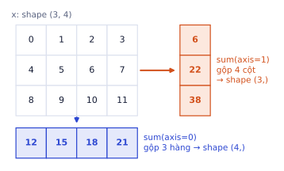
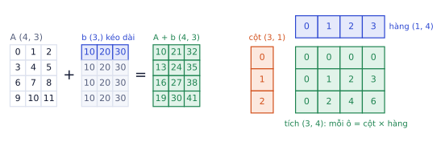
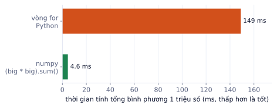
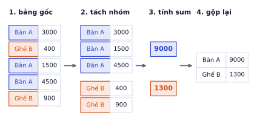
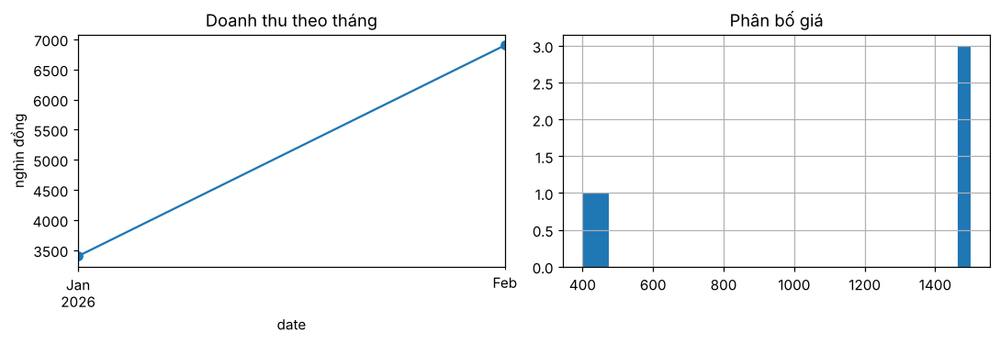
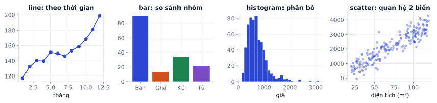

Mọi model bạn train sau này đều nhận dữ liệu dưới dạng mảng số. Bài này luyện ba thư viện bạn sẽ dùng hằng ngày: numpy để tính trên mảng, pandas để làm sạch bảng dữ liệu, matplotlib để nhìn dữ liệu. Kỹ năng quan trọng nhất của bài là vector hóa: viết phép tính trên cả mảng thay cho vòng for.
Python đủ dùng cho ML
Vì sao cần học
Code ML hiếm khi dùng Python "khó". Nhưng có khoảng chục cấu trúc xuất hiện ở mọi notebook, mọi repo: comprehension, hàm, class có __len__/__getitem__, zip, enumerate, f-string. Thạo chúng thì bạn đọc được code PyTorch hay Hugging Face mà không bị khựng.
Comprehension: tạo list và dict trong một dòng
Comprehension là cách viết gọn của vòng for khi mục đích là tạo ra một tập hợp mới:
squares=[x*xforxinrange(5)]# [0, 1, 4, 9, 16]evens=[xforxinrange(10)ifx%2==0]# có điều kiện lọc: [0, 2, 4, 6, 8]by_len={w:len(w)forwin["mèo","chó"]}# dict: {'mèo': 3, 'chó': 3}
Kết quả khi chạy
(chạy xong, không in ra gì)
Đọc từ trái sang phải: "lấy x * x, với mỗi x trong range(5)". Khi vòng lặp có nhiều bước phức tạp, cứ viết for bình thường cho dễ đọc.
zip, enumerate, sorted: ba công cụ duyệt dữ liệu
words=["mèo","chó","gà","vịt"][f"{i}:{w}"fori,winenumerate(words)]# ['0:mèo', '1:chó', '2:gà', '3:vịt'] (kèm chỉ số)sorted(words,key=len)# ['gà', 'mèo', 'chó', 'vịt'] (sắp theo độ dài)list(zip([1,2,3],["a","b","c"]))# [(1, 'a'), (2, 'b'), (3, 'c')] (ghép từng cặp)
zip dùng khi có hai danh sách song song (dự đoán và nhãn thật). key= trong sorted, max, min nhận một hàm, rất hay dùng để lấy "phần tử có điểm cao nhất".
Hàm và class
defaccuracy(pred,true):"""Tỉ lệ dự đoán đúng."""returnsum(p==tforp,tinzip(pred,true))/len(true)accuracy([1,0,1,1],[1,1,1,0])# 0.5classDataset:# đúng khung mà torch.utils.data.Dataset yêu cầudef__init__(self,rows):self.rows=rowsdef__len__(self):# len(ds) gọi hàm nàyreturnlen(self.rows)def__getitem__(self,i):# ds[i] gọi hàm nàyreturnself.rows[i]ds=Dataset(["a","b","c"])len(ds),ds[1]# (3, 'b')
Kết quả khi chạy
0.5
(3, 'b')
Các hàm có hai dấu gạch dưới (__len__, __getitem__) là dunder method: Python tự gọi chúng khi bạn dùng len(...) hay [...]. PyTorch dựa vào đúng cơ chế này để lấy dữ liệu theo batch ở P2.
Phép chia và kiểu số
7 / 2 cho 3.5 (luôn ra số thực), 7 // 2 cho 3 (chia lấy phần nguyên), 7 % 2 cho 1 (phần dư). Phép % hay dùng để làm gì đó "mỗi 100 bước": if step % 100 == 0: print(loss).
Môi trường ảo và thư viện
Mỗi dự án nên có môi trường ảo riêng để phiên bản thư viện của dự án này không phá dự án khác:
python-mvenv.venv# tạosource.venv/bin/activate# kích hoạt (Windows: .venv\Scripts\activate)
pipinstallnumpypandasmatplotlib
pipfreeze>requirements.txt# ghi lại phiên bản để người khác cài đúng
Trên Colab thì không cần: mỗi notebook đã là một môi trường riêng, chỉ cần !pip install ... khi thiếu thư viện.
Lỗi hay gặp
Giá trị mặc định là list. Đối số mặc định chỉ được tạo một lần khi định nghĩa hàm, nên các lần gọi dùng chung một list:
defadd_item(x,bag=[]):bag.append(x)returnbagadd_item(1)# [1]add_item(2)# [1, 2] ← không phải [2]
Kết quả khi chạy
[1]
[1, 2]
Cách đúng: def add_item(x, bag=None): rồi bag = [] if bag is None else bag.
Mảng numpy: shape, dtype, indexing
Vì sao cần học
List Python chứa được mọi thứ nhưng không biết làm toán: [1, 2] * 2 cho [1, 2, 1, 2] chứ không phải [2, 4]. Mảng numpy là khối số cùng kiểu nằm liền nhau trong bộ nhớ, tính toán trên cả khối bằng code C. Tensor của PyTorch dùng gần như y hệt cách đánh chỉ số và shape của numpy, nên học kỹ ở đây là học luôn cho PyTorch.
Tạo mảng
importnumpyasnpnp.array([1,2,3])# từ listnp.zeros((2,3))# toàn số 0, shape (2, 3)np.ones(4)# [1. 1. 1. 1.]np.arange(0,10,2)# [0 2 4 6 8], giống rangenp.linspace(0,1,5)# [0. 0.25 0.5 0.75 1. ], 5 điểm chia đềurng=np.random.default_rng(0)rng.normal(size=(2,3))# số ngẫu nhiên phân phối chuẩn, cố định seed để chạy lại ra giống nhau
x=np.arange(12).reshape(3,4)# [[ 0 1 2 3]# [ 4 5 6 7]# [ 8 9 10 11]]x.shape# (3, 4) số phần tử theo từng trục: 3 hàng, 4 cộtx.ndim# 2 số trụcx.size# 12 tổng số phần tửx.dtype# int64 kiểu số của mọi phần tử
Kết quả khi chạy
(3, 4)
2
12
dtype('int64')
Shape là thứ bạn kiểm tra nhiều nhất trong cả sự nghiệp ML. Phần lớn lỗi khi viết model là lỗi shape. Thói quen tốt: in x.shape sau mỗi bước biến đổi khi còn chưa chắc.
dtype: kiểu số quyết định kết quả
np.array([1,2,3]).dtype# int64np.array([1,2.5]).dtype# float64 (chỉ cần một số thực là cả mảng thành float)np.array([1,2,3])/2# [0.5 1. 1.5] (chia luôn ra float)a=np.array([1,2,3])a[0]=9.7a# [9 2 3] ← 9.7 bị cắt thành 9 vì mảng là int
Deep learning thường dùng float32 (nửa bộ nhớ so với float64, đủ chính xác). Đổi kiểu bằng x.astype(np.float32).
Lấy phần tử: slicing, mặt nạ, danh sách chỉ số
x[1]# [4 5 6 7] hàng thứ 2 (chỉ số bắt đầu từ 0), shape (4,)x[:,0]# [0 4 8] cột đầu, ":" nghĩa là "lấy hết trục này"x[1:,2:]# [[ 6 7]# [10 11]] từ hàng 1 trở đi, từ cột 2 trở đix[x>5]# [ 6 7 8 9 10 11] mặt nạ boolean: chỉ giữ chỗ True, kết quả luôn 1 chiềux[[0,2]]# hàng 0 và hàng 2 (fancy indexing bằng danh sách chỉ số)
x > 5 tạo một mảng True/False cùng shape với x. Đặt nó vào trong [...] để lọc. Đây chính là cách bạn lọc dữ liệu trong pandas ở phần sau.
reshape và transpose
x.reshape(2,-1).shape# (2, 6) -1 nghĩa là "tự tính": 12 / 2 = 6x.reshape(-1).shape# (12,) duỗi thành 1 chiềux.T.shape# (4, 3) đổi hàng thành cộtx[None].shape# (1, 3, 4) chèn thêm một trục độ dài 1 ở đầu
Kết quả khi chạy
(2, 6)
(12,)
(4, 3)
(1, 3, 4)
reshape không đổi thứ tự các số, chỉ đổi cách "xếp" chúng vào các trục. Tổng số phần tử phải giữ nguyên: x.reshape(5, -1) sẽ báo lỗi vì 12 không chia hết cho 5.
axis: trục bị gộp mất
Các hàm tổng hợp (sum, mean, max, argmax...) nhận tham số axis. Cách nhớ chắc nhất: axis=k là trục biến mất trong kết quả.
x.sum(axis=1) gộp trục 1 (4 cột) → còn shape (3,), mỗi hàng một tổng: [6 22 38].
x.sum() gộp tất cả → một số: 66.
x.mean(axis=1) → [1.5 5.5 9.5]: trung bình mỗi hàng.
Trong ML, dữ liệu thường có shape (số mẫu, số đặc trưng). "Trung bình mỗi đặc trưng" là axis=0; "tổng điểm của từng mẫu" là axis=1.

axis=k là trục biến mất: gộp 3 hàng còn một giá trị mỗi cột (xanh), gộp 4 cột còn một giá trị mỗi hàng (cam).Đào sâu thêm
Mảng nằm trong bộ nhớ thế nào. Mảng (3, 4) kiểu int64 thực chất là 12 số nằm liền nhau (96 byte). numpy ghi thêm strides: phải nhảy bao nhiêu byte để sang phần tử kế tiếp theo mỗi trục. Với x, x.strides là (32, 8): sang hàng sau nhảy 32 byte (4 số × 8 byte), sang cột sau nhảy 8 byte.
Vì vậy x.T (chuyển vị) gần như miễn phí: numpy chỉ đổi strides thành (8, 32) chứ không chép dữ liệu. Slicing x[:, 1:3] cũng chỉ là "nhìn" vào cùng vùng nhớ với strides khác. Đó là lý do slicing trả về view. Đổi sang float32 (x.astype(np.float32)) giảm từ 96 xuống 48 byte, một nửa bộ nhớ: GPU có hạn bộ nhớ nên deep learning hầu như luôn dùng float32 hoặc thấp hơn.
Lỗi hay gặp
Slicing trả về view, không phải bản sao. Sửa trên view là sửa luôn mảng gốc:
v=x[0]# view của hàng 0v[0]=100x[0,0]# 100 ← mảng gốc bị đổi theoc=x[0].copy()# bản sao độc lậpc[0]=-5# x không đổi
Kết quả khi chạy
100
Ngược lại, lọc bằng mặt nạ (x[x > 5]) và danh sách chỉ số (x[[0, 2]]) luôn tạo bản sao. Khi cần sửa một phần dữ liệu mà không muốn ảnh hưởng bản gốc, gọi .copy() cho chắc.
Tự kiểm tra nhanh
Với x = np.arange(12).reshape(3, 4) như trên, tính bằng tay:
Broadcasting
Vì sao cần học
Bạn sẽ liên tục làm phép tính giữa mảng lớn và mảng nhỏ: trừ trung bình của từng cột, cộng bias vào từng hàng, nhân trọng số. Broadcasting cho phép viết những phép đó trong một dòng mà không cần copy dữ liệu, và cũng là nguồn lỗi im lặng phổ biến nhất trong code ML.
Quy tắc
Khi tính a + b với hai shape khác nhau, numpy làm ba bước:
Căn phải hai shape. Nếu một bên ít trục hơn, coi như có thêm trục độ dài 1 ở bên trái.
So từng cặp kích thước từ phải sang trái: khớp nếu bằng nhau, hoặc một trong hai bằng 1.
Trục nào bằng 1 sẽ được "kéo dài" cho bằng bên kia (không tốn bộ nhớ thật). Nếu có cặp không khớp, báo lỗi.
a
b
căn phải
kết quả
(4, 3)
(3,)
(4, 3) với (1, 3)
(4, 3): b cộng vào từng hàng
(4, 3)
(4, 1)
(4, 3) với (4, 1)
(4, 3): b cộng vào từng cột
(4, 3)
(4,)
(4, 3) với (1, 4)
lỗi: 3 và 4 không khớp
(3, 1)
(1, 4)
(3, 1) với (1, 4)
(3, 4): cả hai cùng được kéo dài
Ví dụ: chuẩn hóa từng cột
Đặc trưng có thang đo khác nhau (diện tích tính bằng m², giá tính bằng triệu) làm model học chậm. Chuẩn hóa đưa mỗi cột về trung bình 0, độ lệch chuẩn 1:
Bước broadcasting: X shape (3, 2), mu shape (2,) được căn phải thành (1, 2), rồi kéo dài thành (3, 2): hàng nào cũng trừ cùng một vector mu. Sau chuẩn hóa hai cột có cùng thang đo dù ban đầu chênh nhau 200 lần.

Trái: vector b shape (3,) được kéo dài thành 4 hàng rồi cộng vào A. Phải: cột (3, 1) nhân hàng (1, 4) cho bảng (3, 4).
[:, None] biến vector thành cột, [None, :] biến thành hàng. Đây là mẹo bạn sẽ gặp lại trong attention ở P3 và khoảng cách giữa các điểm ở phần tiếp theo.
Lỗi hay gặp
Shape (n,) và (n, 1) trộn nhau. Lỗi này không báo đỏ, chỉ cho ra số sai:
y=np.array([1.,2.,3.])# nhãn thật, shape (3,)y_pred=np.array([[1.],[2.],[4.]])# model trả về shape (3, 1)(y_pred-y).shape# (3, 3) ← broadcasting thành ma trận 3x3!((y_pred-y)**2).mean()# 2.33 sai((y_pred.ravel()-y)**2).mean()# 0.33 đúng
Kết quả khi chạy
(3, 3)
2.3333333333333335
0.3333333333333333
Mỗi khi tính loss bằng tay, in shape của dự đoán và nhãn, hoặc dùng .ravel() / .reshape(-1) để đưa cả hai về 1 chiều.
Vector hóa thay vòng for
Vì sao cần học
Dữ liệu thật có hàng triệu dòng. Cùng một phép tính, viết bằng vòng for có thể mất vài phút; viết vector hóa mất vài giây. Đây cũng là cách tư duy của GPU: làm cùng một phép tính trên cả khối dữ liệu một lúc.
Vì sao nhanh hơn
Mỗi vòng lặp Python phải kiểm tra kiểu của biến, tra cứu phép toán, tạo đối tượng số mới. Phép toán numpy làm việc đó một lần cho cả mảng, rồi chạy vòng lặp bằng C trên vùng nhớ liền nhau (và tận dụng lệnh SIMD của CPU).
big=np.random.default_rng(0).random(1_000_000)s=0.0forvinbig:# khoảng 150 mss+=v*vs2=(big*big).sum()# khoảng 5 ms, nhanh hơn khoảng 30 lần
Kết quả khi chạy
(chạy xong, không in ra gì)
Con số cụ thể tùy máy, nhưng chênh lệch vài chục đến vài trăm lần là bình thường.

Đo trên máy chủ chạy bài này: cùng một phép tính, vòng for chậm hơn khoảng 30 lần.
Các hàm thay thế vòng lặp hay dùng
z=np.array([-2.,0.5,3.,-1.])np.where(z>0,z,0)# [0. 0.5 3. 0. ] ReLU: giữ số dương, còn lại thành 0np.clip(z,-1,1)# [-1. 0.5 1. -1. ] chặn trong khoảng [-1, 1]np.cumsum([1,2,3,4])# [ 1 3 6 10] tổng tích lũyz.argmax()# 2 chỉ số của phần tử lớn nhấtnp.argsort(-z)[:2]# [2 1] chỉ số của 2 phần tử lớn nhất (top-k)
Bài toán: có n điểm trong A và m điểm trong B (mỗi điểm d chiều), cần ma trận khoảng cách D shape (n, m). Bạn sẽ dùng đúng phép này ở k-means (P1) và tìm kiếm vector (P4).
A[:, None, :] chèn trục ở giữa: mỗi điểm của A thành một "hàng" riêng.
B[None, :, :] chèn trục ở đầu: cả B thành một khối.
Phép trừ broadcasting thành (2, 3, 2): phần tử diff[i, j] là vector A[i] - B[j].
Bình phương, cộng theo trục tọa độ, lấy căn: ra khoảng cách Euclid.
Kiểm tra một ô: D[1, 1] là khoảng cách từ (3, 4) tới (6, 8) = √(3² + 4²) = 5. Đúng.
Ghi nhớ: trước khi viết vòng for trên mảng, hỏi: "phép này viết trên cả mảng được không?". Hầu như luôn được, nhờ broadcasting, mặt nạ và các hàm như where, cumsum, argsort.
Đào sâu thêm
So sánh số thực. Máy tính lưu số thực ở dạng nhị phân nên 0.1 + 0.2 == 0.3 cho False. Khi kiểm tra kết quả tính toán (ví dụ so code của bạn với PyTorch trong notebook), dùng np.isclose(a, b) hoặc np.allclose(A, B, atol=1e-6) thay cho ==. Các ô tự chấm trong lộ trình này đều so theo cách đó.
Lỗi hay gặp
Mảng trung gian quá lớn. Ví dụ khoảng cách ở trên tạo mảng diff shape (n, m, d). Với 100.000 × 100.000 điểm 128 chiều, mảng đó cần hơn 10 TB. Khi n·m·d lớn, chia A thành từng khúc (ví dụ 1.000 điểm) rồi tính lần lượt, hoặc dùng công thức ‖a − b‖² = ‖a‖² + ‖b‖² − 2a·b để chỉ cần ma trận (n, m).
pandas: làm việc với bảng
Vì sao cần học
Dữ liệu thật ít khi là mảng số sạch sẽ. Nó là bảng có cột chữ, cột ngày, ô trống, dòng trùng. pandas là công cụ chuẩn để đọc, làm sạch, gộp nhóm và nối bảng trước khi đưa vào model. Phần lớn thời gian của một dự án ML thật nằm ở bước này.
Series và DataFrame
Series: một cột dữ liệu có nhãn (index). Giống mảng numpy 1 chiều có tên cho từng dòng.
DataFrame: một bảng gồm nhiều Series dùng chung index. Mỗi cột có thể khác kiểu.
Ta dùng một bảng đơn hàng nhỏ để minh họa mọi thao tác:
importpandasaspddf=pd.DataFrame({"date":pd.to_datetime(["2026-01-03","2026-01-15","2026-02-02","2026-02-20","2026-02-21"]),"product":["Bàn A","Ghế B","Bàn A","Bàn A","Ghế B"],"qty":[2,1,1,3,2],"price":[1500,400,None,1500,450],})# date product qty price# 0 2026-01-03 Bàn A 2 1500.0# 1 2026-01-15 Ghế B 1 400.0# 2 2026-02-02 Bàn A 1 NaN# 3 2026-02-20 Bàn A 3 1500.0# 4 2026-02-21 Ghế B 2 450.0
Kết quả khi chạy
(chạy xong, không in ra gì)
Với file thật: pd.read_csv("orders.csv", parse_dates=["date"]) hoặc pd.read_excel("orders.xlsx").
Ba lệnh xem dữ liệu trước mọi thứ
df.head()# 5 dòng đầudf.info()# số dòng, kiểu từng cột, số ô không trốngdf.describe()# đếm, trung bình, độ lệch chuẩn, min, các phân vị, max của cột sốdf.isna().sum()# số ô trống từng cột: price có 1
Kết quả khi chạy
date product qty price
0 2026-01-03 Bàn A 2 1500.0
1 2026-01-15 Ghế B 1 400.0
2 2026-02-02 Bàn A 1 NaN
3 2026-02-20 Bàn A 3 1500.0
4 2026-02-21 Ghế B 2 450.0
<class 'pandas.DataFrame'>
RangeIndex: 5 entries, 0 to 4
Data columns (total 4 columns):
# Column Non-Null Count Dtype
--- ------ -------------- -----
0 date 5 non-null datetime64[us]
1 product 5 non-null str
2 qty 5 non-null int64
3 price 4 non-null float64
dtypes: datetime64[us](1), float64(1), int64(1), str(1)
memory usage: 324.0 bytes
date qty price
count 5 5.00000 4.000000
mean 2026-01-30 19:12:00 1.80000 962.500000
min 2026-01-03 00:00:00 1.00000 400.000000
25% 2026-01-15 00:00:00 1.00000 437.500000
50% 2026-02-02 00:00:00 2.00000 975.000000
75% 2026-02-20 00:00:00 2.00000 1500.000000
max 2026-02-21 00:00:00 3.00000 1500.000000
std NaN 0.83666 620.987117
date 0
product 0
qty 0
price 1
Ô trống hiện là NaN (Not a Number). Cột số có ô trống sẽ thành kiểu float, đó là lý do price hiện 1500.0.
Đếm, sắp xếp và lấy top
df["product"].value_counts()# Bàn A 3, Ghế B 2: mỗi giá trị xuất hiện bao nhiêu lầndf.sort_values("qty",ascending=False)# sắp theo qty giảm dầndf.nlargest(2,"qty")# 2 dòng có qty lớn nhấtdf["product"].nunique()# 2: số giá trị khác nhau
Kết quả khi chạy
product
Bàn A 3
Ghế B 2
date product qty price
3 2026-02-20 Bàn A 3 1500.0
0 2026-01-03 Bàn A 2 1500.0
4 2026-02-21 Ghế B 2 450.0
2 2026-02-02 Bàn A 1 NaN
1 2026-01-15 Ghế B 1 400.0
date product qty price
3 2026-02-20 Bàn A 3 1500.0
0 2026-01-03 Bàn A 2 1500.0
2
value_counts() là lệnh đầu tiên nên chạy với mọi cột chữ: nó cho biết có bao nhiêu nhóm, nhóm nào chiếm đa số, và có giá trị viết sai chính tả không ("Bàn A" và "bàn A" sẽ hiện thành hai dòng).
Chọn dòng và cột: loc và iloc
df["qty"]# một cột → Seriesdf[["product","qty"]]# nhiều cột → DataFramedf.loc[df["qty"]>=2,["product","qty"]]# loc: lọc theo điều kiện và tên cộtdf.iloc[0:2,1:3]# iloc: theo vị trí, giống slicing của numpy
Kết quả khi chạy
0 2
1 1
2 1
3 3
4 2
product qty
0 Bàn A 2
1 Ghế B 1
2 Bàn A 1
3 Bàn A 3
4 Ghế B 2
product qty
0 Bàn A 2
3 Bàn A 3
4 Ghế B 2
product qty
0 Bàn A 2
1 Ghế B 1
loc dùng nhãn (tên cột, giá trị index, mặt nạ boolean), iloc dùng vị trí số. Khi lọc nhiều điều kiện, dùng & (và), | (hoặc), ~ (phủ định), và bọc từng điều kiện trong ngoặc.
Lỗi hay gặp
Quên ngoặc khi kết hợp điều kiện. Toán tử & được tính trước >=, nên dòng dưới không báo lỗi mà lọc sai:
df[df["qty"]>=2&(df["price"]>1000)]# sai: ra 5 dòngdf[(df["qty"]>=2)&(df["price"]>1000)]# đúng: ra 2 dòng
Kết quả khi chạy
date product qty price
0 2026-01-03 Bàn A 2 1500.0
1 2026-01-15 Ghế B 1 400.0
2 2026-02-02 Bàn A 1 NaN
3 2026-02-20 Bàn A 3 1500.0
4 2026-02-21 Ghế B 2 450.0
date product qty price
0 2026-01-03 Bàn A 2 1500.0
3 2026-02-20 Bàn A 3 1500.0
Xử lý ô trống
Ba lựa chọn, tùy ý nghĩa dữ liệu:
Cách
Lệnh
Khi nào
Bỏ dòng
df.dropna(subset=["price"])
ít dòng thiếu, thiếu ngẫu nhiên
Điền giá trị
df["price"].fillna(...)
có giá trị hợp lý để điền (trung vị, giá trị của nhóm)
Giữ và đánh dấu
df["price_missing"] = df["price"].isna()
việc thiếu tự nó mang thông tin
Ở bảng ví dụ, cùng một sản phẩm thường cùng giá, nên điền theo trung vị của sản phẩm đó hợp lý hơn trung vị cả bảng:
df["price"]=df["price"].fillna(df.groupby("product")["price"].transform("median"))df["revenue"]=df["qty"]*df["price"]# cột mới, tính trên cả cột (vector hóa)# date product qty price revenue# 0 2026-01-03 Bàn A 2 1500.0 3000.0# 1 2026-01-15 Ghế B 1 400.0 400.0# 2 2026-02-02 Bàn A 1 1500.0 1500.0# 3 2026-02-20 Bàn A 3 1500.0 4500.0# 4 2026-02-21 Ghế B 2 450.0 900.0
Kết quả khi chạy
(chạy xong, không in ra gì)
groupby: tách nhóm, tính, gộp lại
groupby là thao tác bạn dùng nhiều nhất khi phân tích. Nó làm ba việc: tách bảng thành các nhóm theo một cột, áp dụng một hàm cho từng nhóm, gộp kết quả thành bảng mới.

groupby("product")["revenue"].sum(): tách theo sản phẩm, cộng từng nhóm, gộp thành bảng nhỏ.
Ví dụ từng bước
df.groupby("product")["revenue"].sum()# product# Bàn A 9000.0 ← 3000 + 1500 + 4500# Ghế B 1300.0 ← 400 + 900
Kết quả khi chạy
product
Bàn A 9000.0
Ghế B 1300.0
Nhiều phép tính một lúc, đặt tên cột kết quả:
df.groupby("product").agg(so_don=("qty","size"),# số dòng mỗi nhómtong_sl=("qty","sum"),doanh_thu=("revenue","sum"),)# so_don tong_sl doanh_thu# product# Bàn A 3 6 9000.0# Ghế B 2 3 1300.0
Kết quả khi chạy
so_don tong_sl doanh_thu
product
Bàn A 3 6 9000.0
Ghế B 2 3 1300.0
Theo tháng: nhóm theo một biểu thức thay vì một cột có sẵn.
product Bàn A Ghế B
date
1 3000.0 400.0
2 6000.0 900.0
merge: nối bảng như SQL JOIN
products=pd.DataFrame({"product":["Bàn A","Ghế B"],"category":["Bàn","Ghế"]})full=df.merge(products,on="product",how="left")# thêm cột category vào mỗi đơn
Kết quả khi chạy
(chạy xong, không in ra gì)
how quyết định giữ dòng nào: "left" giữ mọi dòng bảng trái (hay dùng nhất), "inner" chỉ giữ dòng khớp ở cả hai bảng, "outer" giữ hết.
Lỗi hay gặp
Khóa bị trùng ở bảng phải làm số dòng tăng. Nếu bảng phải có 2 dòng cho "Bàn A" (ví dụ hai màu), mỗi đơn "Bàn A" bị nhân đôi:
Doanh thu cộng lại sẽ bị đếm hai lần. Luôn so len() trước và sau khi merge, hoặc dùng validate="many_to_one" để pandas báo lỗi khi khóa bị trùng.
apply và vector hóa trong pandas
df["x"].apply(f) gọi hàm Python cho từng dòng, chậm như vòng for. Với phép toán số, dùng phép tính trên cả cột (df["qty"] * df["price"]). Với chữ, dùng các hàm .str (df["product"].str.lower(), .str.contains("Bàn")). Với ngày, dùng .dt (.dt.month, .dt.dayofweek). Chỉ dùng apply khi không có cách vector hóa.
Ví dụ từng bước
Tạo đặc trưng từ cột ngày và cột chữ, không vòng lặp nào:
df["month"]=df["date"].dt.month# [1, 1, 2, 2, 2]df["weekday"]=df["date"].dt.dayofweek# 0 = thứ Hai, ..., 5 = thứ Bảy, 6 = Chủ nhậtdf["is_table"]=df["product"].str.contains("Bàn")# True/Falsedf["is_table"].sum()# 3 đơn là bàn
Kết quả khi chạy
3
Đây là bước feature engineering: biến dữ liệu thô thành các cột số mà model dùng được. Ở P1 bạn sẽ thấy một cột tạo khéo thường giúp model nhiều hơn đổi sang model phức tạp hơn.
Tự kiểm tra nhanh
Từ bảng df đã điền giá và có cột revenue ở trên:
matplotlib: nhìn dữ liệu trước khi train
Vì sao cần học
Thống kê tóm tắt có thể giống hệt nhau trong khi dữ liệu khác hẳn nhau. Một biểu đồ cho thấy ngay giá trị ngoại lai, phân bố lệch, xu hướng theo mùa, hay một cột bị nhập sai đơn vị. Vẽ trước khi train giúp bạn tránh train model trên dữ liệu hỏng.
Figure và Axes
Một Figure là cả bức hình; mỗi Axes là một khung biểu đồ bên trong. Cách viết rõ ràng nhất là tạo cả hai bằng plt.subplots rồi vẽ lên từng ax:
importmatplotlib.pyplotaspltmonthly=df.groupby(df["date"].dt.to_period("M"))["revenue"].sum()fig,axes=plt.subplots(1,2,figsize=(10,3.5))# 1 hàng, 2 khungmonthly.plot(ax=axes[0],marker="o")axes[0].set_title("Doanh thu theo tháng")axes[0].set_ylabel("nghìn đồng")df["price"].hist(ax=axes[1],bins=30)axes[1].set_title("Phân bố giá")plt.tight_layout()# tránh chữ đè nhaufig.savefig("eda.png",dpi=150)# lưu để đưa vào READMEplt.show()
Kết quả khi chạy

Chọn biểu đồ theo câu hỏi
Câu hỏi
Biểu đồ
Lệnh
Thay đổi theo thời gian thế nào?
line
ax.plot(x, y)
Nhóm nào lớn hơn?
bar
ax.bar(names, values)
Giá trị phân bố ra sao, có ngoại lai không?
histogram, boxplot
ax.hist(v, bins=30), ax.boxplot(v)
Hai biến có liên quan không?
scatter
ax.scatter(x, y, alpha=.3)
Mẹo nhỏ đáng giá: alpha=.3 cho scatter khi điểm dày đặc để thấy chỗ đậm nhạt; ax.set_yscale("log") khi giá trị trải từ vài chục tới vài triệu; luôn ghi tên trục và đơn vị.

Bốn loại biểu đồ cho bốn loại câu hỏi. Histogram giá ở đây lệch phải: nhiều đơn rẻ, ít đơn rất đắt, đúng kiểu dữ liệu bán hàng thật.
Lỗi hay gặp
Trộn hai cách viết. matplotlib có hai kiểu: plt.plot(...) (vẽ lên "khung hiện tại") và ax.plot(...) (vẽ lên khung chỉ định). Khi có nhiều khung, plt.title() chỉ đặt tiêu đề cho khung cuối cùng, dễ nhầm. Có nhiều hơn một khung thì luôn dùng fig, axes = plt.subplots(...) và gọi qua từng ax.
Ghi nhớ: biểu đồ tốt trả lời một câu hỏi. Viết câu hỏi làm tiêu đề ("Doanh thu tháng 2 tăng gấp đôi?") thay vì tên dữ liệu ("revenue").
Quy trình xem dữ liệu (EDA) trong 6 bước
Gộp mọi thứ ở trên thành một quy trình bạn sẽ lặp lại ở mọi dự án:
Đọc và xem:read_csv, head, info, describe. Ghi lại số dòng, số cột, kiểu từng cột.
Kiểm tra chất lượng: ô trống (isna().sum()), dòng trùng (duplicated().sum()), giá trị vô lý (giá âm, ngày ở tương lai).
Làm sạch: sửa kiểu dữ liệu, xử lý ô trống có lý do, bỏ trùng. Ghi lại mỗi quyết định.
Tạo cột mới: doanh thu, tháng, thứ trong tuần, bằng phép tính vector hóa.
Tổng hợp và vẽ:groupby, pivot_table, mỗi biểu đồ trả lời một câu hỏi.
Viết kết luận: 3–5 câu có số liệu cụ thể ("Bàn A chiếm 87% doanh thu").
Tự kiểm tra nhanh
Bạn vừa đọc một file có 10.000 đơn hàng. describe() cho thấy cột qty có min là −3. Bước nào trong quy trình trên phát hiện vấn đề này, và bạn sẽ xử lý thế nào?
Xem đáp án
Bước 2 (kiểm tra chất lượng). Số lượng âm có thể là đơn trả hàng chứ không hẳn là lỗi. Đếm có bao nhiêu dòng như vậy, xem chúng có cột trạng thái riêng không, rồi quyết định: tách riêng để tính tỉ lệ hoàn, hoặc loại khỏi phần tính doanh thu bán. Ghi quyết định vào notebook.
Tóm tắt bài và thuật ngữ
Chủ đề
Điều cần nhớ
Lệnh tiêu biểu
Python
comprehension, zip, enumerate, class có __len__/__getitem__
[f(x) for x in xs]
numpy
shape là thứ cần kiểm tra nhiều nhất; slicing là view
x.shape, x.reshape(-1), x.copy()
axis
axis=k là trục biến mất
X.mean(axis=0)
Broadcasting
căn phải, so từng cặp, bằng nhau hoặc bằng 1
A[:, None] - B[None, :]
Vector hóa
thay vòng for bằng phép trên cả mảng
np.where, argsort, cumsum
pandas
xem → làm sạch → tạo cột → groupby → vẽ
info, fillna, groupby().agg, merge
matplotlib
mỗi biểu đồ trả lời một câu hỏi
fig, axes = plt.subplots()
Thuật ngữ
Nghĩa
array / ndarray
mảng nhiều chiều của numpy, mọi phần tử cùng kiểu
shape
số phần tử theo từng trục, ví dụ (3, 4)
dtype
kiểu số của mảng: int64, float32, bool...
axis
một trục của mảng; axis=0 là trục hàng
view / copy
view dùng chung bộ nhớ với mảng gốc, copy thì độc lập
broadcasting
cơ chế tự kéo dài trục độ dài 1 khi tính giữa hai mảng khác shape
vectorization
viết phép tính trên cả mảng thay vì từng phần tử
DataFrame / Series
bảng / một cột có nhãn của pandas
NaN
ô trống (Not a Number)
groupby
tách nhóm, áp dụng hàm, gộp kết quả
merge / join
nối hai bảng theo cột khóa
EDA
Exploratory Data Analysis: xem và hiểu dữ liệu trước khi làm model
feature engineering
tạo cột đặc trưng mới từ dữ liệu thô
Làm bằng giấy bút trước, rồi kiểm tra lại bằng code nếu muốn.
Ô tự chấm đã giải đúng0 / 3
Bài 1
Đoán shape
tính tay
Cho a = np.zeros((4, 3)), b = np.ones(3), x = np.zeros((2, 3, 4)).
(a + b).shape có bao nhiêu hàng, bao nhiêu cột?
x.reshape(-1, 4).shape[0] bằng bao nhiêu?
x.sum(axis=1).shape có dạng (p, q). Tìm p, q.
Gợi ý
Với reshape(-1, 4), tổng số phần tử giữ nguyên: 2·3·4 = 24, chia cho 4. Với sum(axis=1), trục thứ hai (độ dài 3) bị gộp mất.
Lời giải
b shape (3,) khớp với trục cuối của a nên kết quả (4, 3). reshape(-1, 4) cho (6, 4). sum(axis=1) bỏ trục độ dài 3, còn (2, 4).
Bài 2
Tính theo trục
tính tay
a = np.arange(6).reshape(2, 3), tức là [[0, 1, 2], [3, 4, 5]].
Lời giải
sum(axis=0) cộng dọc các hàng: [3, 5, 7], phần tử thứ 3 là 7. mean(axis=1) lấy trung bình mỗi hàng: [1, 4]. max(axis=0) lấy max mỗi cột: [3, 4, 5], tổng 12.
Bài 3
One-hot không dùng vòng for
code
Viết hàm one_hot(y, k) nhận mảng nhãn số nguyên y shape (n,) và trả về ma trận (n, k), hàng i có số 1 ở cột y[i]. Không dùng vòng for.
Ma trận đơn vị np.eye(k) có hàng j chính là one-hot của j. Bạn chỉ cần chọn đúng các hàng.
Code tham khảo
defone_hot(y,k):returnnp.eye(k)[y]# cách khác, không tạo ma trận k×k:defone_hot2(y,k):out=np.zeros((len(y),k))out[np.arange(len(y)),y]=1returnout
Kết quả khi chạy
(chạy xong, không in ra gì)
Bài 4
Khoảng cách từng cặp
code
Viết pairwise_dist(A, B) với A shape (n, d), B shape (m, d), trả về (n, m) khoảng cách Euclid. Sau đó đo thời gian so với bản hai vòng for trên n = m = 500, d = 64.
Code tham khảo
importtimeimportnumpyasnpdefpairwise_dist(A,B):returnnp.sqrt(((A[:,None,:]-B[None,:,:])**2).sum(-1))defpairwise_loop(A,B):D=np.zeros((len(A),len(B)))foriinrange(len(A)):forjinrange(len(B)):D[i,j]=np.sqrt(((A[i]-B[j])**2).sum())returnDA,B=np.random.rand(500,64),np.random.rand(500,64)t=time.time();D1=pairwise_dist(A,B);t1=time.time()-tt=time.time();D2=pairwise_loop(A,B);t2=time.time()-tprint(np.allclose(D1,D2),f"nhanh hơn {t2/t1:.0f} lần")
Kết quả khi chạy
True nhanh hơn 5 lần
Bài 5
groupby bằng tay
tính tay
Bảng đơn hàng (giá tính bằng nghìn đồng):
tháng
sản phẩm
số lượng
giá
1
bàn trang điểm
2
1500
1
gương
1
300
2
gương
3
300
2
bàn trang điểm
1
1500
Lời giải
df["revenue"] = qty * price rồi groupby("tháng")["revenue"].sum(): tháng 1 là 3000 + 300 = 3300, tháng 2 là 900 + 1500 = 2400. groupby("sản phẩm")["số lượng"].sum() cho gương: 1 + 3 = 4.
Phân tích dữ liệu bán hàng
Bạn sẽ viết một notebook phân tích hoàn chỉnh. Dùng dữ liệu đơn hàng thật của bạn (ví dụ xuất từ kênh người bán), hoặc tạo dữ liệu giả bằng đoạn code dưới.
Các bước
Nạp dữ liệu, xem info(), describe(), đếm giá trị thiếu và dòng trùng.
Làm sạch: bỏ dòng thiếu giá, bỏ trùng, đổi cột ngày sang datetime.
Tạo cột revenue, tính doanh thu theo tháng và 5 sản phẩm bán chạy nhất.
Tính tỉ lệ đơn hoàn theo từng sản phẩm.
Vẽ 5 biểu đồ: doanh thu theo tháng (line), top sản phẩm (bar), phân bố giá trị đơn (histogram), số lượng theo ngày trong tuần (bar), giá với số lượng (scatter).
Viết 5 kết luận, mỗi kết luận một câu, dựa trên biểu đồ.
Code khởi đầu (dữ liệu giả)
importnumpyasnp,pandasaspdrng=np.random.default_rng(0)n=2000products={"bàn trang điểm":1500,"gương LED":450,"ghế đôn":250,"kệ mỹ phẩm":320,"đèn bàn":280}names=rng.choice(list(products),n,p=[0.25,0.3,0.2,0.15,0.1])df=pd.DataFrame({"date":pd.Timestamp("2026-01-01")+pd.to_timedelta(rng.integers(0,300,n),unit="D"),"product":names,"qty":rng.integers(1,4,n),"price":[products[p]*rng.uniform(0.9,1.1)forpinnames],"returned":rng.random(n)<0.06,})df.loc[rng.choice(n,30,replace=False),"price"]=np.nan# giá trị thiếu để làm sạch
Xong khi
Notebook chạy lại từ đầu không lỗi (Kernel → Restart & Run All).
Không có vòng for duyệt từng dòng dữ liệu.
Có đủ 5 biểu đồ, mỗi biểu đồ có tiêu đề và nhãn trục, và 5 kết luận.
Code tham khảo
df=df.dropna(subset=["price"]).drop_duplicates()df["revenue"]=df["qty"]*df["price"]monthly=df.groupby(df["date"].dt.to_period("M"))["revenue"].sum()top5=df.groupby("product")["qty"].sum().nlargest(5)return_rate=df.groupby("product")["returned"].mean().sort_values(ascending=False)weekday=df.groupby(df["date"].dt.dayofweek)["qty"].sum()importmatplotlib.pyplotaspltfig,ax=plt.subplots(2,3,figsize=(15,8))monthly.plot(ax=ax[0,0],marker="o",title="Doanh thu theo tháng")top5.plot.bar(ax=ax[0,1],title="Top sản phẩm (số lượng)")df["revenue"].plot.hist(ax=ax[0,2],bins=40,title="Giá trị đơn")weekday.plot.bar(ax=ax[1,0],title="Số lượng theo thứ (0 = thứ Hai)")ax[1,1].scatter(df["price"],df["qty"],s=4,alpha=.3);ax[1,1].set_title("Giá và số lượng")return_rate.plot.barh(ax=ax[1,2],title="Tỉ lệ hoàn")plt.tight_layout();plt.show()
Xong bài khiHàm vector hóa của bạn nhanh hơn bản vòng for ít nhất 50 lần, và notebook phân tích chạy lại được từ đầu.